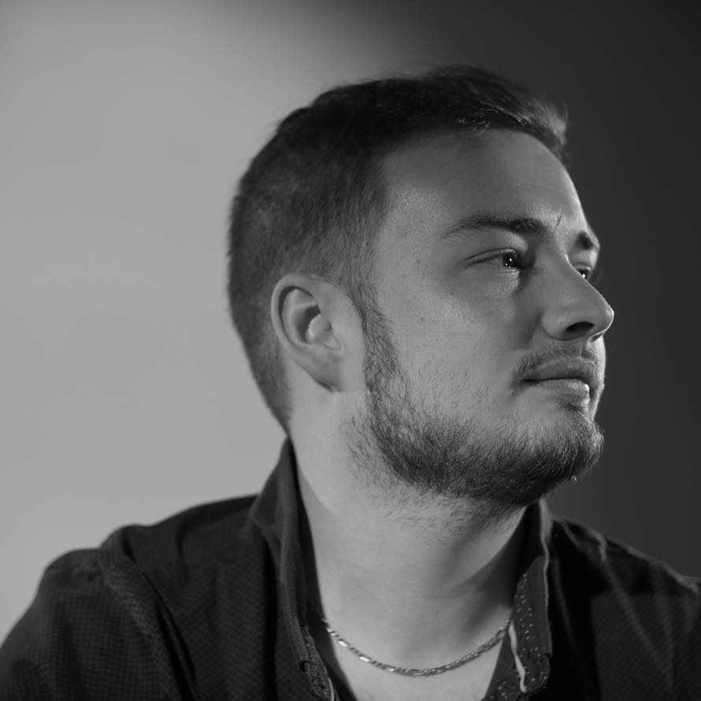

Quentin Quibel
Recherche alternance en tant que développeur web -
Disponible dès maintenant
CONTACT
- 07.80.57.80.84
- quentin.quibel76@gmail.com
- 1Bis A Rue de la haute ville
- 76960
- Notre-Dame-De-Bondeville
- Permis B
SAVOIR-ÊTRE
- Curieux
- Créatif
- Sociable
- Dynamique
- Sens commercial
CENTRES D'INTÉRETS
- Sport
- Nouvelles technologies

- Gaming
- Voyage
ÉTUDES ET FORMATIONS
Formation référent digital - NFactory School (2019)
- -Projet fil rouge (Programmation d'un site web et business plan d'un produit pour l'Armada
de Rouen)
- -Projet vidéo en 48h "Je filme le métier qui me plaît" (Créativité, prise de vidéo, Montage
vidéo)
- -Animation des réseaux sociaux
- -Veille des dernières tendances numériques
- -Prendre en charge le marketing numérique et la notoriété de la marque sur le web
- -Développement web en HTML/CSS/PHP
-
1ère année de licence sciences humaines et sociales
Université de Rouen (2017/2018)
-
BAC STI2D - Lycée Pablo Neruda (2016)
EXPÉRIENCES
- MONTEUR ASSEMBLEUR
- INTÉRIMAIRE CHEZ RENAULT CLÉON DE AOÛT À FÉVRIER 2021
- -Manutention et assemblage moteur
- -Entretien des machines
- OPÉRATEUR DE TRI
- INTÉRIMAIRE CHEZ LES ATELIERS DU GOÜTS DE JANVIER À MARS 2020
- -Contrôle
- -Palettisation
- DEVELOPPEUR WEB
- STAGIAIRE POUR L'ASSOCIATION DREAM EVOLUTION DE MAI À JUIN 2019
- -Mise en place des bases d'un site évenementiel
- -Développement d'une roue de hasard afin de gagner des lots
- -Contact pour correspondre à la demande du client